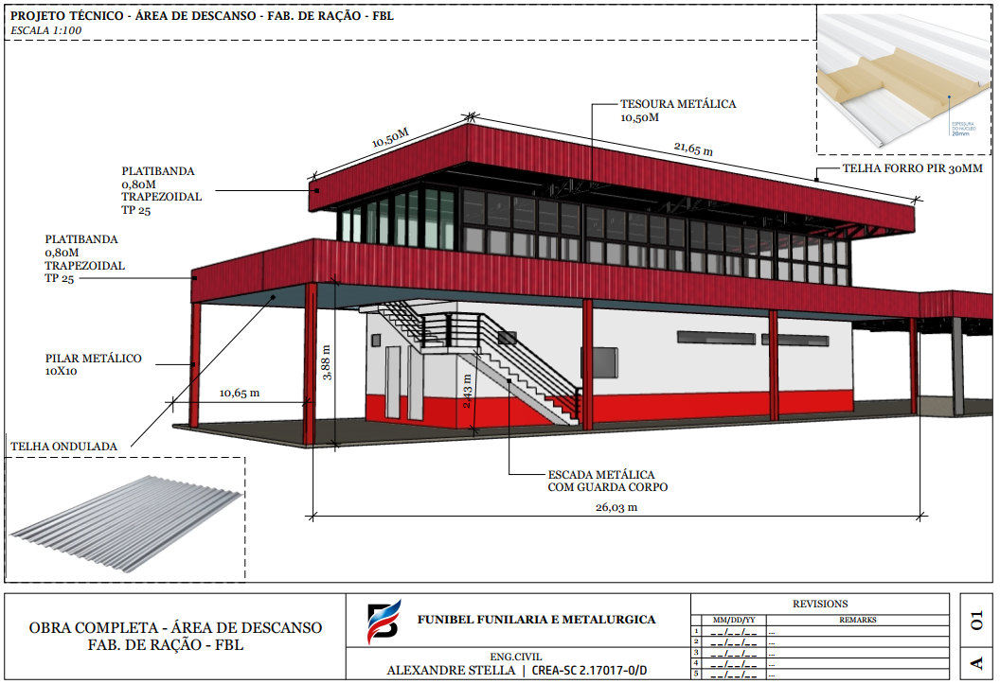
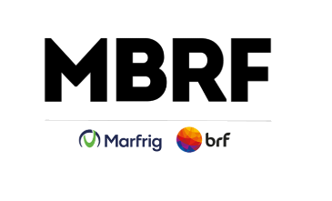
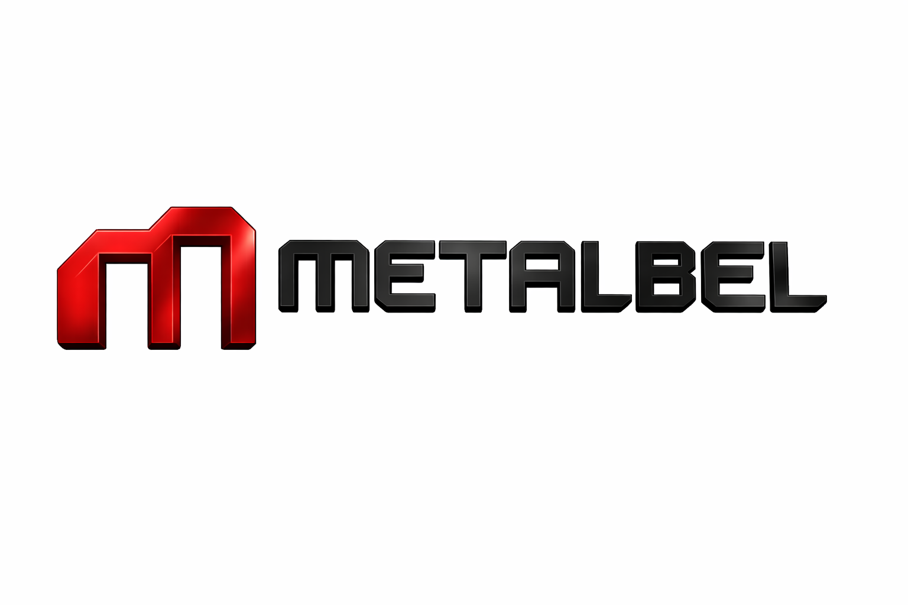
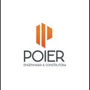

Engenharia Civil • Estrutural • Industrial • Residencial
Projetos com base técnica, apresentação profissional e foco em resultado.
A AS Engenharia Civil atua com projetos civis, estruturais metálicos, industriais, comerciais, residenciais, infraestrutura e laudos técnicos. Soluções com organização, segurança e clareza em cada etapa.
IndustrialFrigoríficos, fábricas e estruturas metálicas
ResidencialCoberturas, ampliações e soluções sob medida
LaudosAvaliação técnica e patologias
Painel técnico
- Projetos Civil, Estrutural Metálico Industrial e Comercial
- Atendimento a Frigoríficos e Laticínios
- Residencial e de Infraestrutura
- Laudos de Avaliação e Patologias
PrecisãoDetalhamento técnico e compatibilização
ExecuçãoSoluções viáveis para obra e operação

Credibilidade
Experiência, presença regional e atuação técnica consistente
Matriz em Francisco Beltrão - PR, com atendimento para a Região Sul e mais de 10 anos de experiência em engenharia civil.
Serviços
Soluções técnicas para obra, indústria e avaliação estrutural
Atendimento com foco em clareza, segurança, execução e apresentação técnica profissional.
Projetos Estruturais Metálicos
Estruturas metálicas, coberturas, tesouras, treliças, plataformas, passarelas e detalhamento executivo.
Projetos Industriais
Soluções para frigoríficos, laticínios, fábricas, silos, áreas técnicas e adaptações operacionais.
Laudos e Perícias
Laudos de avaliação, inspeções, análise de patologias e relatórios técnicos para apoio à decisão.
Regularização
Apoio técnico para ajustes, documentação, verificações e adequações necessárias em cada projeto.
Consultoria Técnica
Orientação profissional para definição de soluções, revisão de projeto, viabilidade e execução.
Residencial e Infraestrutura
Ampliações, garagens, coberturas, calhas, drenagem e soluções sob medida para cada necessidade.
Segmentos atendidos
Atendimento para diferentes demandas de engenharia na Região Sul
Projetos e soluções para ambientes industriais, comerciais, residenciais e de infraestrutura.
▣FrigoríficosEstruturas, adequações e soluções técnicas para operação.
◫LaticíniosProjetos e detalhamentos com foco em funcionalidade e segurança.
△IndústriasCoberturas, passarelas, plataformas e estruturas metálicas.
⌂ResidencialAmpliações, coberturas, garagens e soluções personalizadas.
▤ComercialProjetos para espaços de uso comercial com clareza executiva.
⟗InfraestruturaElementos estruturais, drenagem, calhas e apoio à implantação.
Relacionamento profissional
Empresas que confiam na A Stella Engenharia
Atuação técnica em projetos e soluções desenvolvidas para empresas de diferentes segmentos.



Obras e projetos
Alguns projetos desenvolvidos para a FUNIBEL
Galeria com imagens reais dos projetos enviados, destacando escopo técnico, modelagem e detalhamento.
Industrial e comercial
Cobertura metálica para pavilhão
Projeto técnico com tesouras, terças, fechamento e detalhamento de materiais para cobertura metálica.
Estrutural metálico
Estrutura metálica de apoio
Modelagem estrutural com vigas e pilares metálicos para intervenção e reforço em estrutura existente.
Industrial
Tesouras e treliças para cobertura
Solução para galpão com tesouras metálicas, treliças e compatibilização com cobertura adjacente.
Infraestrutura
Passarelas industriais
Mapeamento técnico e definição de caminhos de passarelas com foco em acesso, segurança e operação.
Frigoríficos e laticínios
Fechamento lateral e parede metálica
Detalhamento de parede metálica e elementos de fixação aplicados em ambiente industrial.
Industrial
Estrutura de cobertura para caçamba
Estrutura metálica com acesso e plataformas, pensada para operação segura e manutenção.
Residencial
Ampliação de garagem
Projeto civil e metálico para ampliação de garagem com cobertura, pilares e detalhamento executivo.
Industrial e comercial
Área de descanso fabril
Projeto completo para área de descanso com estrutura metálica, cobertura e integração arquitetônica.
Estrutural metálico
Detalhamento de cantoneiras e grapas
Desenho técnico voltado à fabricação e montagem com ênfase em encaixes, medidas e checklist estrutural.
Infraestrutura
Torre sobre silo DDG
Projeto com cortes e vistas para intervenção sobre silo, incluindo cobertura, escada e proteção operacional.
Residencial e infraestrutura
Cobertura metálica com calhas
Compatibilização de cobertura, calhas e escoamento com detalhamento técnico e quantitativos.
Laudos e avaliação
Relatório final de estrutura residencial
Síntese técnica com cargas, verificações e conclusões para apoio à decisão do cliente.
Contato
Precisa de um projeto, laudo ou solução estrutural?
Atendimento profissional com foco em clareza técnica, prazo e confiança.
Telefone
46 99975-0135
E-mail
atendimento@asengenhariacivil.com.br
Instagram
@alexandre_stella_
CREA-SC
2.17017-0/D
Rua Antonina, 191 (apto 601) - Edifício São Francisco - Centro - Francisco Beltrão - PR